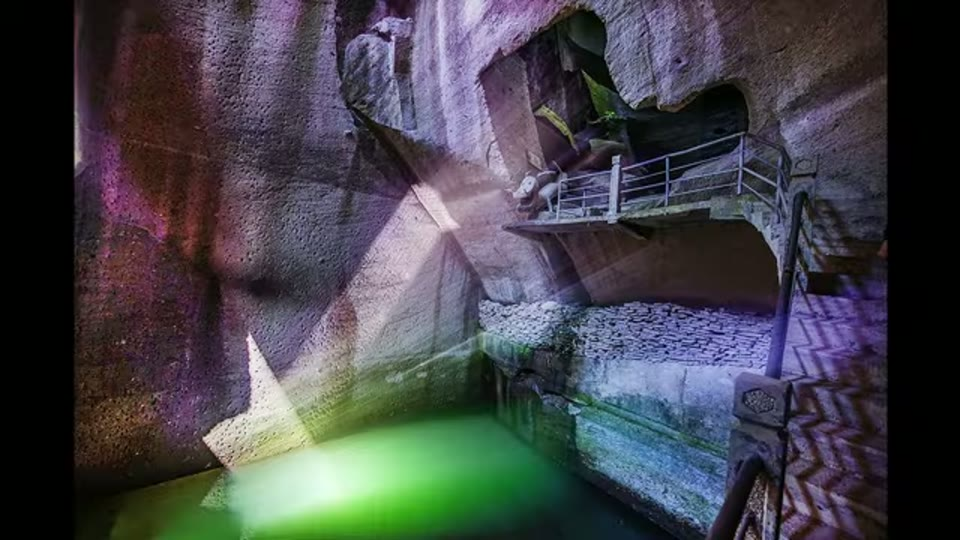
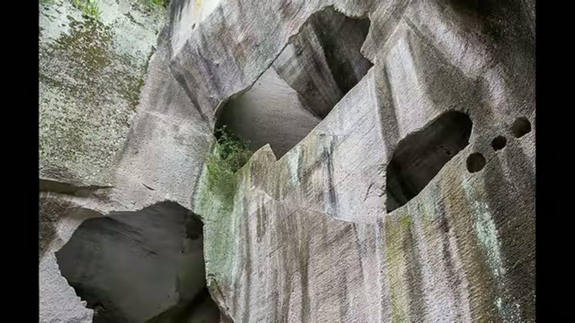
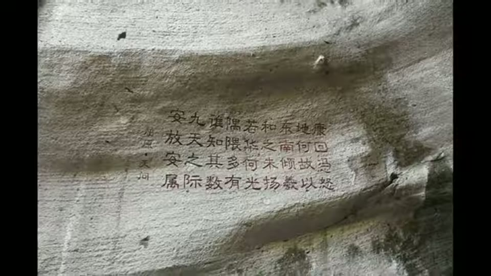
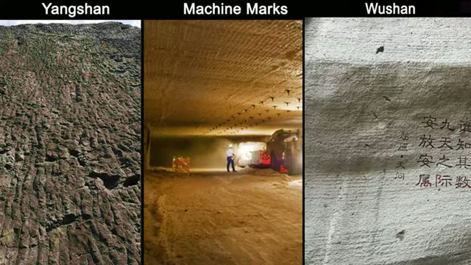
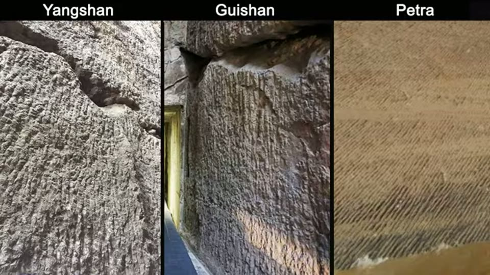
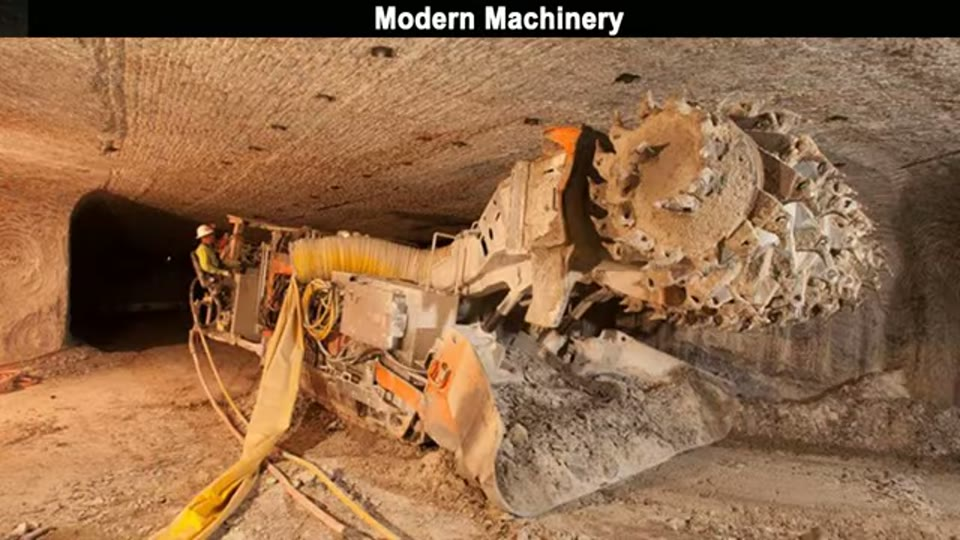
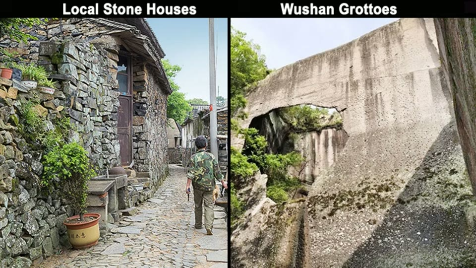
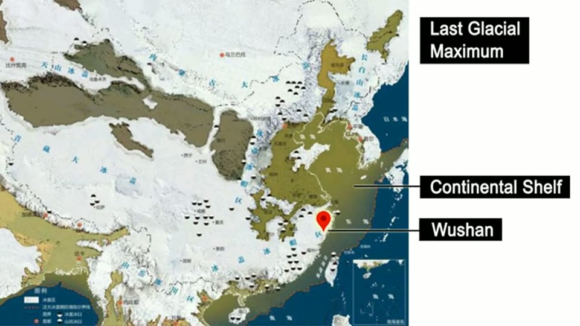

Curious Being
Ancient Chinese Quarry: Proof of Lost Advanced Technology?
Tina · 14 min · watch on YouTube · summarised 2026-08-22
Wushan Grottoes in Zhejiang is a worked-out stone quarry of more than 840 caves, now a scenic tourist site. Tina says it is one of 15 large quarries in the same region, all sharing the same distinctive tool marks, conventionally dated 1,500–2,000 years old 00:06–00:26.
Her argument runs in three moves, and they are worth keeping separate because they are not equally strong: the marks are not hand-tool marks; the product was not blocks; therefore the missing structures are somewhere we have not looked.

An ordinary hill turned into a landscape of chambers and pools — the scale is what makes the question 'where did the stone go' worth asking.
Move 1 — the tool marks
The marks are uniform, continuous, horizontal, parallel and tightly spaced 03:46–03:58, running around the circumference of a cave. Her image for it: as if someone ran a huge comb with diamond teeth over the stone.


Uniform, continuous, tightly spaced parallel marks covering the cut faces — the feature she says no hand tool could produce at this scale.
Her case that hand tools cannot produce this is mechanical rather than statistical 04:05–04:50, and it is the strongest paragraph in the video:
- a chisel is swung down; hammering horizontally is not how the tool is used, and chisels are for small-scale detailed work
- a pickaxe cannot be swung sideways at all
- even granting the motion, the accuracy and consistency would have to hold for an accurate, smooth, continuous horizontal line right around a large cave — and then be repeated in countless parallel copies
She then says the marks match modern mining machine marks, and shows a side-by-side comparison with Baalbek, Yangshan Quarry, Petra and other sites 05:04–05:26, reading the similarity as a possible sign of one prehistoric global civilisation. The curved surfaces and corners she attributes to something like a rotary drum cutter or continuous miner 05:29–05:41.


The same combed texture at sites with no known contact — and, in the middle panel, in a working modern mine.

The modern tool she says leaves marks like these, and what it is actually for: cutting rock to rubble, not cutting blocks.
Move 2 — the product was not blocks
These sites are called quarries, but she argues they were not producing building stone 06:29–06:54. The marks are unlike the saw marks that make blocks or slabs; the modern machines that leave marks like these produce aggregate — crushed stone.
This is the pivot the rest of the video rests on, and it is the move she supports most lightly: the whole inference is from tool-mark morphology to product type.
She also reads the local architecture as evidence of two different builders 05:41–06:20: the houses and walls around Wushan are small blocks and rubble, in sharp contrast to the smooth shaved faces of the grottoes. She does not think the people who made one made the other.

Two qualities of stonework in the same place: she does not think the people who made one made the other.
Move 3 — so where is it?
If the product was aggregate, the argument becomes economic. Crushed stone is not worth transporting: it is sourced locally almost everywhere even today, and moving it more than about 40 km is considered uneconomical 08:07–08:49. So whatever was built with it should be near Wushan. There is no such structure.
Her answer is the ground the video opens on 00:52–02:35. Zhejiang adjoins the East China Sea, two-thirds of which is shallow continental shelf. At the Last Glacial Maximum sea level was about 120 m lower and almost the whole shelf was dry land, with Taiwan and the Japanese archipelago connected to the mainland; east China stayed ice-free. The glacial period ran over 100,000 years — "plenty of time for a civilization to thrive". Anything built there is now underwater and under sand. She notes the disputed Yonaguni Monument sits 300 miles away, 26 m down, and would also have been dry land then — flagging the dispute over whether it is man-made rather than assuming it.

If aggregate is not worth moving far, whatever it built was near Wushan — and at the time she proposes, 'near Wushan' includes a great deal of land that is now sea.
The geopolymer coda
The last third 10:17–13:20 asks what the crushed stone was for, and answers by elimination. Not lime concrete: lime comes from limestone, the Zhejiang quarries are volcanic tuff, and she says she has found no ancient Chinese limestone quarry carrying the same marks — which she reads as a sign the tuff was not a concrete ingredient. But tuff is high in silica and alumina, which makes it ideal for geopolymer, an alumina-silicate binder.
Her closing point is a genuine argument rather than an assertion: Portland concrete needs above 5 °C to cure and must be protected from freezing for the first day, which makes it a poor material during a glacial period. Geopolymer cures at ambient temperature. If you have already accepted an ice-age builder, geopolymer fits the climate and ordinary concrete does not.
What you can check yourself
- The marks themselves. Whether they are horizontal, continuous and parallel around a cave circumference is a photographic question, and Wushan is an open tourist site.
- The chisel and pickaxe argument is testable directly: it is a claim about how those tools can physically be swung, not about ancient China.
- The 40 km aggregate figure is a checkable statement about modern quarrying economics.
- Tuff composition — high silica and alumina, and unsuitable as a lime source — is standard petrology, not a special claim.
- Whether any Chinese limestone quarry carries these marks. She says she found none; a counter-example would remove the geopolymer step.
What the video does not settle
- The dating is never reconciled. She opens by saying the marks are dated 1,500–2,000 years old, and closes arguing for the Last Glacial Period — a gap of at least ten thousand years. The video never says why the conventional date should be rejected, and this is the largest hole in it.
- No mainstream account is stated. Unlike her knobs video, there is no attempt to set out how archaeology explains these quarries and their marks before disagreeing with it. A reader who wants to check the argument has nothing here to check it against.
- Her own comparison images undercut the chisel argument. The refutation turns on the marks being horizontal, which is the awkward direction for a hand tool. But in the side-by-side panels she offers as matches, the combing at Yangshan and Guishan runs vertically and at Petra diagonally. If the same texture appears in every orientation, then orientation is not what makes it hard to explain — the fineness and regularity are — and that is a weaker claim than the one she makes.
- Much of the ice-age section is stock photography. The Last Glacial Maximum map at 01:58 is real and annotated, but the surrounding shots of glaciers and green valleys are generic landscape images illustrating the narration, not evidence about East Asia.
- Marks to product is an inference, not a demonstration. "Modern machines that leave marks like this make aggregate" does not establish that these marks were made by a machine that made aggregate.
- No material analysis, of the tuff or of any structure supposedly built from it. The geopolymer section is a plausibility argument about chemistry and climate, and she presents it as one.
- The submerged-structures answer is unfalsified rather than supported. She says plainly that few underwater investigations have been done in the Chinese marginal sea, so "we really don't know" — which is honest, and also means the argument's conclusion currently rests on absence.
See also
- World's Largest Monolith: Yangshan Monument — the site that appears in the comparison panel here, argued in its own right.
- Enduring Mysteries of the Huashan Grottoes — the same mark family claimed at a third Chinese site, with a Turkish comparison that matches better than most.
What we have not checked
- "Wushan Grottoes" is the name as spoken; the spelling is not confirmed against a Chinese source. The neighbouring site she names, Changyu, is a real Zhejiang quarry-cave complex.
- The transcript says "Yanshan Quarry"; corrected to Yangshan, the unfinished-stele quarry near Nanjing, which is the site she compares elsewhere. Inferred, not heard clearly.
- "Baalbeck" and "Saqsaywaman" corrected to Baalbek and Sacsayhuamán.